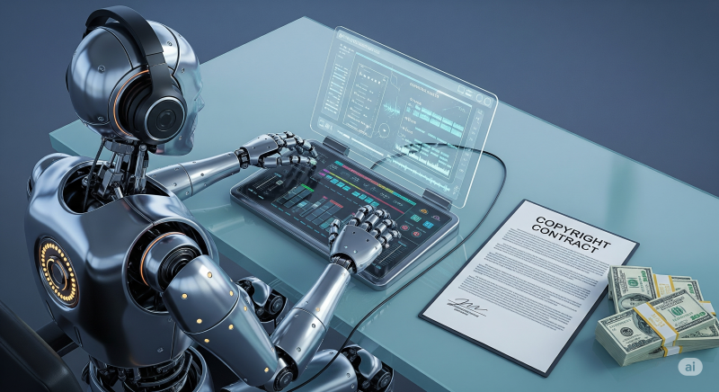

음악 산업이 AI와의 전쟁 대신 전격적인 '동맹'을 선택했습니다. "테일러 스위프트 스타일로, 조지 클린턴의 베이스라인을 넣어 노래 만들어줘" 같은 AI 명령, 한 번쯤 들어보셨나요? 그 AI가 학습한 수많은 곡들의 저작권은 과연 어떻게 되는 걸까요?
이 질문은 창작계 전체를 뒤흔드는 뜨거운 감자였습니다. 그런데 최근, 유니버설, 워너, 소니 뮤직 등 세계 3대 음반사가 AI 스타트업과 손을 잡고 이 문제에 대한 해답을 내놓기 시작했습니다.
이 글을 끝까지 읽으시면, 여러분은 음악 산업이 어떻게 AI라는 거대한 파도에 올라타 새로운 수익 모델을 만들어내고 있는지, 그리고 이것이 모든 창작 산업의 미래에 어떤 청사진을 제시하는지 명확하게 알게 될 것입니다.
이 글의 목차
AI와 음악 산업, 새로운 관계의 시작
최근 유니버설 뮤직 그룹, 워너 뮤직, 소니 뮤직은 생성형 AI 음악 스타트업인 Suno, Udio와 적극적인 논의에 들어갔습니다. 핵심은 이들 AI 회사가 음악을 학습(Training)하거나 새로운 트랙을 생성할 때마다 음반사와 소속 아티스트에게 정당한 보상을 지급하도록 하는 '라이선스 계약'을 체결하는 것입니다.
이것이 왜 중요한가?
이 움직임은 단순히 돈을 받는 것을 넘어, AI 시대에 창작자의 권리를 보호하고 새로운 생태계를 구축하려는 거대한 전략의 일부입니다.
- 위기를 기회로: 저작권 침해라는 잠재적 위협을 새로운 수익 창출의 기회로 전환하고 있습니다.
- 선제적 대응: 법적 제도가 기술 발전 속도를 따라가지 못하는 상황에서, 소모적인 소송 대신 업계가 스스로 표준을 만들어가고 있습니다.
- 미래 산업의 청사진: 이 모델은 음악뿐만 아니라 신문, 출판, 블로그 등 AI에 의해 지적 재산(IP)이 무단으로 사용될 수 있는 모든 창작 분야의 선례가 될 수 있습니다.
💡 핵심 포인트: AI 시대의 가장 중요한 자산은 '데이터'와 '지적 재산(IP)'입니다. 음악 산업은 자신들의 IP를 보호하면서 동시에 AI 혁명에 동참하는 가장 현명한 방법을 찾아낸 것입니다.
'AI 저작권료'는 어떻게 작동할까? 거래의 핵심 3요소
그렇다면 음반사들은 AI로부터 어떻게 보상을 받으려는 걸까요? 현재 논의되는 거래의 핵심 요소는 다음과 같습니다.
-
1단계: 로열티 및 추적 시스템 구축
가장 중요한 것은 '어떤 음악이 얼마나 사용되었는지'를 정확히 추적하는 것입니다. 이를 위해 이미 검증된 모델인 유튜브의 '콘텐츠 ID(Content ID)' 시스템을 벤치마킹하고 있습니다. AI가 특정 아티스트의 음악을 학습하거나 유사한 스타일의 음악을 생성할 때마다 자동으로 추적하여 로열티를 정산하는 방식입니다. -
2단계: 지분 투자 가능성 모색
단순히 라이선스 비용을 받는 것을 넘어, 일부 음반사들은 유망한 AI 스타트업의 '지분(Equity)'을 확보하는 방안도 고려하고 있습니다. 이는 AI 기술 성장의 과실을 직접 공유하겠다는 장기적인 투자 관점의 접근입니다. -
3단계: 업계 표준 마련 및 분쟁 해결
이러한 계약은 현재 진행 중이거나 앞으로 발생할 수 있는 수많은 저작권 소송을 해결하는 '업계 표준'이 될 수 있습니다. 모든 당사자가 합의한 공정한 규칙이 있다면, 법정에서 시간과 비용을 낭비할 필요가 없어집니다.
"모든 당사자가 합의에 이르고 그것이 공정하다고 결정하면, 누구도 법정에 갈 필요가 없습니다. 법적 체계를 확장할 필요도 없죠."
– Gary Brode, Deep Knowledge Investing
과거의 실수에서 배운 교훈: 소송 대신 협력으로
음악 산업의 이러한 현명한 대응은 25년 전의 뼈아픈 실패 경험에서 비롯되었습니다. 과거와 현재의 대응 방식을 비교해보면 그들의 전략 변화가 얼마나 극적인지 알 수 있습니다.
사례 1: 실패한 과거 - '대학생 고소' 사건
- 상황(Before): 2000년대 초, 냅스터(Napster) 등으로 디지털 음악 불법 복제가 성행했습니다. 당시 기술 변화에 대응할 방법을 찾지 못했던 음반사들은 혼란에 빠졌습니다.
- 실수(Mistake): 그들이 선택한 방법은 기술과 협력하는 대신, 음악을 불법으로 다운로드한 '대학생'들을 대대적으로 고소하는 것이었습니다.
- 교훈(Lesson): 이 전략은 음악 불법 복제를 막지 못했을 뿐만 아니라, 거대 기업이 학생들을 괴롭힌다는 '골리앗' 이미지만 얻으며 엄청난 여론의 역풍을 맞았습니다. 결국 최악의 홍보 사례로 남게 되었습니다.
사례 2: 현명한 현재 - 'AI와의 협력'
- 상황(Before): 생성형 AI라는, 과거 불법 다운로드보다 훨씬 더 복잡하고 강력한 기술적 변화에 직면했습니다.
- 적용 과정(Action): 과거의 실수를 반복하지 않고, 소송이라는 칼을 꺼내 드는 대신 AI 스타트업에 먼저 다가가 협상의 테이블을 차렸습니다.
- 결과(After): AI를 적으로 만드는 대신, 새로운 기술을 활용해 수익을 창출하고 산업 생태계를 함께 만들어가는 파트너 관계를 구축하고 있습니다. 이는 훨씬 더 성숙하고 전략적인 접근입니다.
소송 vs. 라이선스: 왜 지금의 방식이 더 현명한가?
음악 산업이 과거의 '소송' 전략과 현재의 '라이선스' 전략은 근본적인 차이가 있습니다. 이는 기술 변화에 대응하는 두 가지 상반된 태도를 보여줍니다.
| 구분 | 소송 전략 (과거) | 라이선스 전략 (현재) |
|---|---|---|
| 핵심 특징 | 기술을 적으로 규정하고 법적 처벌에 집중 | 기술을 파트너로 인정하고 협력 모델 구축 |
| 장점 | 단기적으로 저작권의 중요성 환기 | 새로운 수익원 창출, 혁신 동참, 긍정적 관계 형성 |
| 단점 | 막대한 소송 비용, 부정적 여론 형성, 기술 발전과 괴리 | 수익 배분 등 협상 과정이 복잡할 수 있음 |
| 추천 대상 | 변화를 거부하고 기존 방식을 고수하려는 조직 | 기술 변화에 적응하고 미래 시장을 선점하려는 모든 창작 산업 |
결론적으로, 라이선스 전략은 불확실성을 줄이고 윈-윈(Win-Win) 관계를 구축하는 훨씬 더 지속 가능하고 현명한 방법입니다.
자주 묻는 질문 (FAQ)
이 새로운 움직임에 대해 많은 분들이 궁금해하실 만한 질문들을 모아봤습니다.
Q1. AI가 지불한 로열티는 아티스트에게 직접 전달되나요?
A. 네, 그렇습니다. 음반사는 AI 회사로부터 로열티를 징수하여 기존의 음원 수익 정산 시스템과 유사한 방식으로 아티스트에게 분배할 책임이 있습니다. 아티스트들은 일간, 월간 리포트를 통해 자신의 음악이 어떻게 사용되고 있는지 확인할 수도 있게 될 것입니다.
Q2. 이 모델은 음악 산업에만 적용될까요?
A. 아닙니다. 이 움직임은 시작에 불과합니다. 뉴욕타임스 같은 언론사들도 이미 자신들의 기사가 LLM 훈련에 무단으로 사용되었다며 소송을 제기했습니다. 음악 산업의 이번 라이선스 모델은 신문사, 출판사, 블로거 등 모든 텍스트 기반 창작자들이 AI와 협력 모델을 구축하는 중요한 선례가 될 것입니다.
Q3. AI가 만든 음악에도 저작권이 인정되나요?
A. 이 부분은 아직 법적으로 완전히 정리되지 않은 회색 지대입니다. 바로 이 법적 불확실성 때문에, 음반사들이 소송 대신 '사적 계약'을 통해 명확한 규칙을 만들려는 것입니다. 법원의 판결을 기다리기보다 업계가 스스로 질서를 만들어가는 것이죠.
결론: AI 시대, 지적 재산(IP)이 최고의 자산이다
결론적으로, 음악 산업은 AI를 적으로 규정하고 싸우는 대신, 라이선스 계약을 통해 새로운 파트너로 받아들이는 혁신적인 길을 선택했습니다. 우리는 이들이 과거의 실패에서 교훈을 얻어 어떻게 현명한 전략을 펼치는지, 그리고 이것이 다른 창작 분야에 어떤 영향을 미칠지 살펴보았습니다.
가장 중요한 메시지는 이것입니다: AI 혁명의 시대, 가장 가치 있는 자산은 바로 '지적 재산(IP)'입니다.
여러분이 만약 창작자라면, 이 거대한 변화의 물결을 어떻게 준비하고 계신가요? AI와 창작의 미래에 대한 여러분의 생각이나 질문이 있다면 아래 댓글로 자유롭게 공유해주세요.